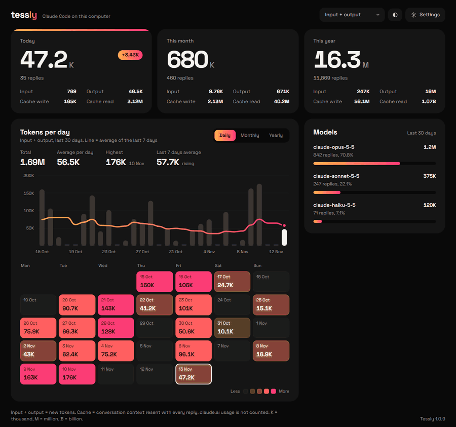

Tessly totals the tokens Claude Code uses on your computer, today, this month and this year, right from the Windows tray.

What you get
Claude Code reports usage one session at a time. Tessly adds every session and project together, keeps the history, and shows how it grows.
Today, this month and this year, split into input, output, cache write and cache read.
Daily, monthly or yearly bars with a moving-average line, so a busy week stands out.
A color calendar shows your busiest days at a glance.
See how your tokens divide between Opus, Sonnet and Haiku.
No account, no API key, no setup. Light and dark mode, English and Indonesian, and one-click updates from inside the app.
Get started
Get the installer from the latest release on GitHub.
Run it. It installs for your Windows account only, no admin rights needed.
Use Claude Code as usual, then click the Tessly icon in the tray to see your totals.
The installer is not code-signed yet, so Windows may show "Windows protected your PC" the first time. Click More info, then Run anyway. Every installer is built from the public source code.
Privacy
Tessly works entirely on your computer.
It reads the session logs Claude Code already writes to %USERPROFILE%\.claude\projects.
Token counts per date and model. Never conversation text, file names or project folders.
Its only network request checks GitHub for a new version of Tessly.
FAQ
Claude Code resends the whole conversation with every reply, and most of it is read from cache. That is why the default filter, "Input + output", counts only new tokens.
No. Chats on claude.ai (web and desktop) are stored only on Anthropic's servers, so Tessly cannot see them.
Claude Code deletes logs older than 30 days by default. Tessly keeps its own totals, so your history stays.
Tessly checks for a new version when it starts, when you open its window, and every 10 minutes. A popup offers to install it, with a progress window while it installs.
Yes. Tessly is open source under the MIT license, with no ads, accounts or paid tiers.